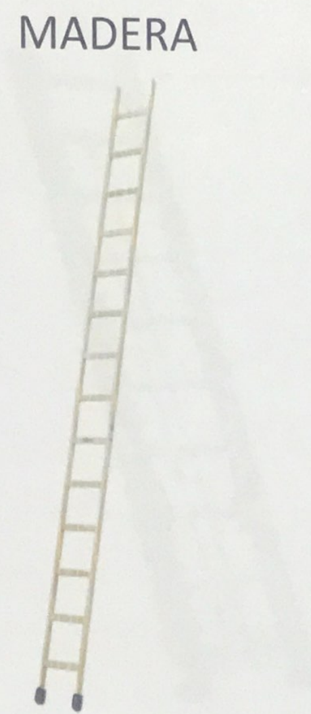
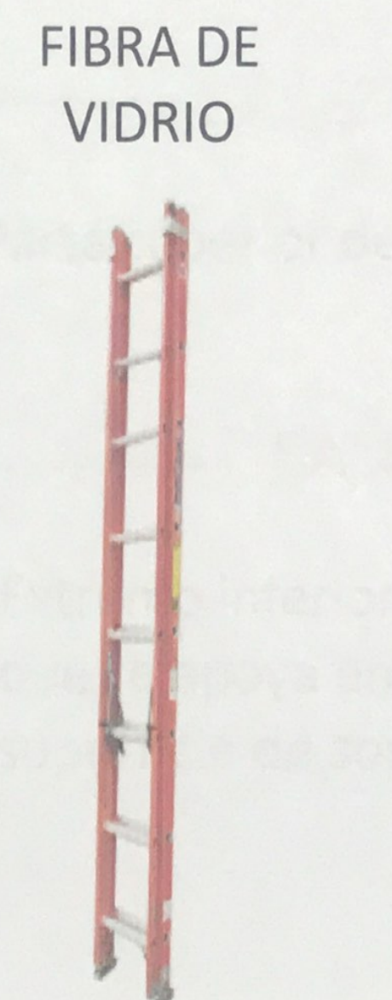
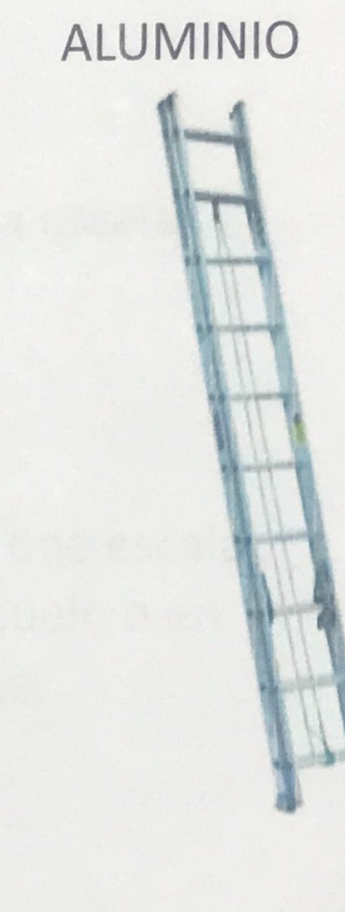
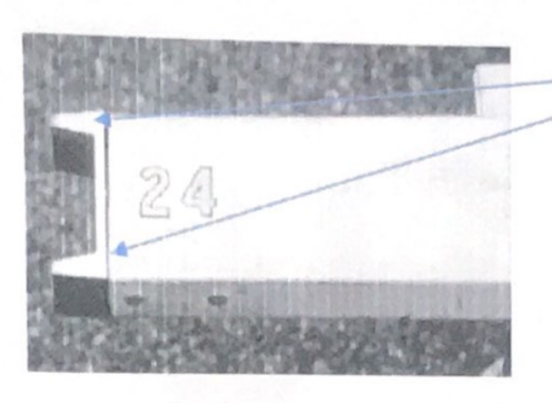
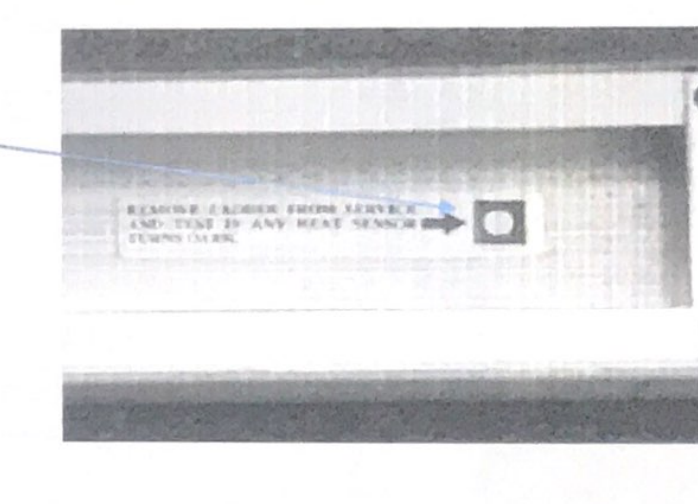
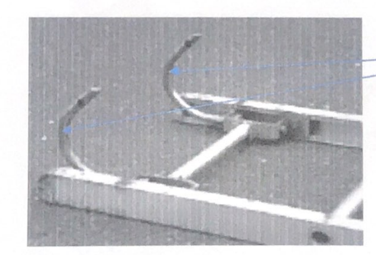
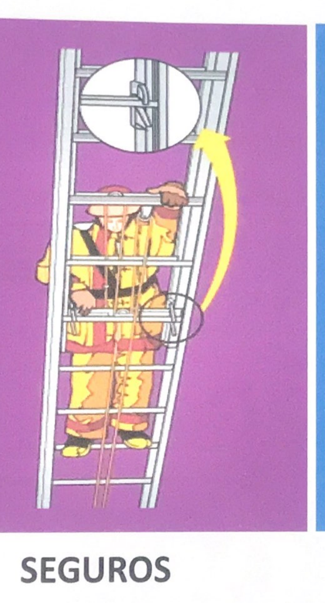
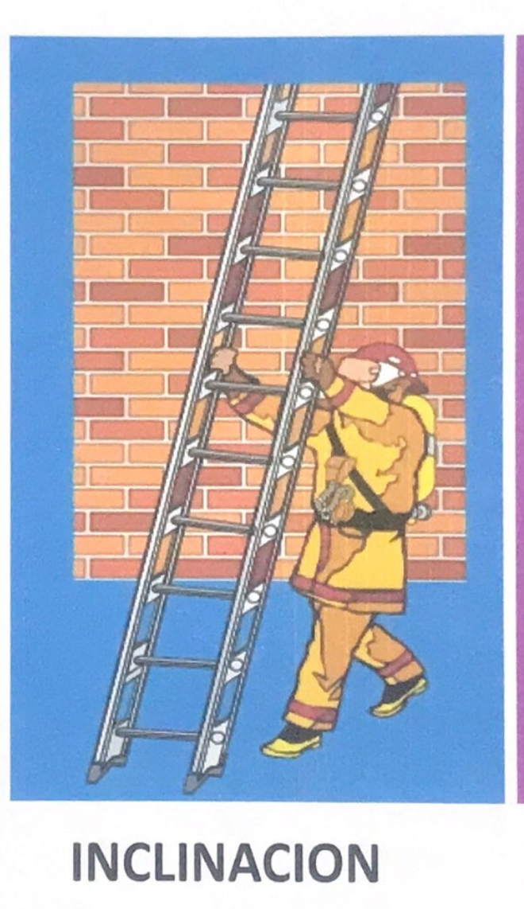
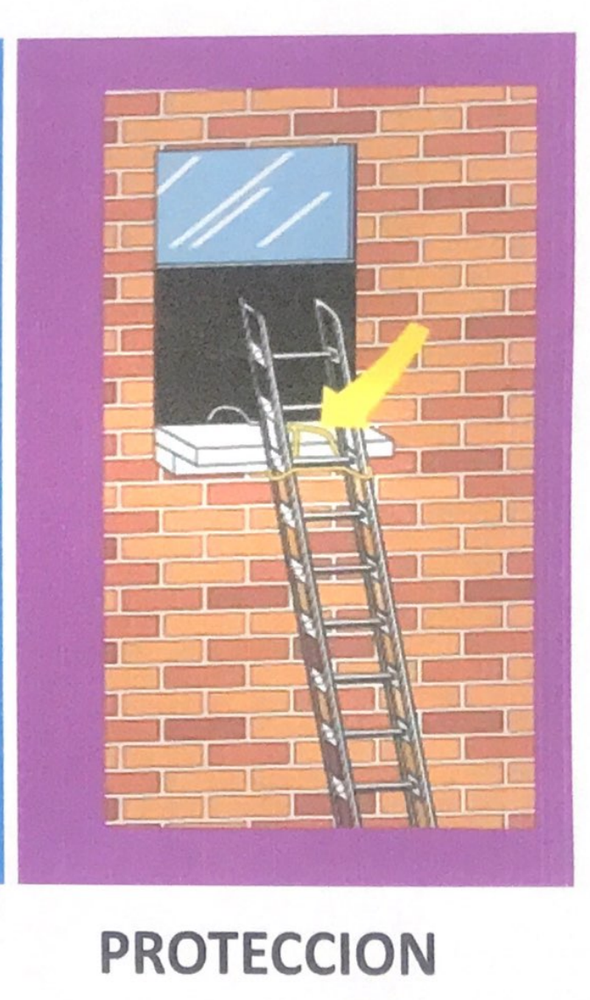

Teoría del fuego
Objetivos
Al finalizar el tema, se espera que la persona pueda:
- Reconocer los componentes de la combustión.
- Listar las formas de transferencia de calor.
- Mencionar las fases del fuego.
- Reconocer los fenómenos térmicos.
Definiciones
Calor y temperatura
Calor: Es la energía que se transfiere de un cuerpo a otro con distinta temperatura.

Temperatura: Se utiliza como medida de energía térmica para determinar hasta qué punto un objeto está frío o caliente.
Oxidación y temperatura de ignición
Oxidación: Reacción química de un material orgánico con oxígeno u otro agente oxidante para formar un compuesto más estable.

La lámina ordena ejemplos de oxidación de más lenta a más rápida:
- Corrosión.
- Fuego latente.
- Combustión de metano.
- Explosión.
Temperatura de ignición: La mínima temperatura a la cual un combustible en aire debe ser calentado para iniciar una combustión autosostenida, independiente de la fuente de calentamiento.
Combustión
Combustión: Es un proceso autosostenido de oxidación rápida de un combustible, que es reducido por un agente oxidante y normalmente se manifiesta con el desarrollo de luz y calor.

Pirólisis
Pirólisis: Descomposición química de la materia causada por el calentamiento a altas temperaturas. A causa del calentamiento, la materia comienza a emitir vapor de agua y luego gases combustibles que, al mezclarse con el aire, producen una mezcla inflamable.

Componentes del fuego
Triángulo y tetraedro
El material representa los componentes del fuego mediante dos modelos:
- Triángulo del fuego: combustible, oxígeno y calor.
- Tetraedro del fuego: combustible, oxígeno, calor y reacción química en cadena.

Combustible
Combustible: Material o sustancia que se oxida o arde en el proceso de combustión. Puede encontrarse en diferentes estados de la materia.

Gaseoso
- Para que ocurra la combustión con llamas, los combustibles deben estar en estado gaseoso.
- Pueden ser los más peligrosos, puesto que ya se encuentran en el estado físico requerido para la ignición.

Líquido
- Para quemarse, los líquidos deben evaporarse.
- Mientras más superficie tenga un líquido en un envase, mayor cantidad de vapores desprenderá.

Sólido
- Cuando los sólidos se calientan, comienzan un proceso de pirólisis o gasificación y desprenden vapores combustibles.
- En la combustión de los sólidos intervienen factores físicos como el tamaño o su ubicación con respecto a la fuente de calor.
La lámina también señala la energía requerida para la ignición y la relación entre superficie y masa.

Oxígeno
- El oxígeno es necesario para que exista la oxidación.
- La energía liberada en el fuego es directamente proporcional a la cantidad de oxígeno disponible para la combustión.

Concentración
La lámina compara distintos niveles de oxígeno:
- 21 % de oxígeno.
- 12 % de oxígeno.
- 9 % de oxígeno: la lámina indica que no soportará la combustión o la respiración.

Límites de inflamabilidad
Límite de inflamabilidad o explosivo: Porcentaje de una sustancia en el aire que se quemará una vez encendida. La mayoría de las sustancias tienen un límite máximo (mezcla muy rica) y un límite mínimo (mezcla muy pobre) de inflamabilidad.
En el diagrama aparecen las abreviaturas LII y LSI, junto con las zonas de mezcla pobre, mezcla explosiva y mezcla muy rica.

Reacción en cadena y calor
Reacción química en cadena: Proceso químico que, una vez iniciada la combustión, permite que esta continúe.
El calor:
- Proporciona la energía necesaria para la ignición.
- Provoca la pirólisis o la evaporación de los combustibles sólidos o líquidos.

Fuentes de energía calórica
Energía química
La lámina presenta tres formas de generación de energía calórica química:
- Calor de combustión.
- Calor de solución.
- Calor de descomposición.

Energía eléctrica
La lámina muestra estas fuentes o situaciones asociadas con energía eléctrica:
Calentamiento por resistencia

Arco eléctrico

Sobrecorriente o sobrecarga

Chispas por cortocircuito

Energía mecánica
La lámina presenta:
Calor por fricción

Calor por compresión
El esquema compara una condición de menor temperatura con otra de mayor temperatura.

Transferencia de calor
En la naturaleza, el calor se puede transferir de las siguientes maneras:
- Conducción.
- Convección.
- Radiación.

Conducción
La lámina describe la conducción como el calentamiento de un cuerpo por contacto directo con una fuente de calor.
En los diagramas se identifican:
- Un material aislante térmico y un material conductor térmico.
- Un cuerpo A a mayor temperatura que un cuerpo B.
- El cuerpo B recibe calor por el choque de electrones libres del cuerpo A.
- El proceso termina cuando ambos cuerpos igualan sus temperaturas.


Radiación
La lámina describe la radiación como una transferencia de calor por medio de “ondas calientes” emitidas por un cuerpo con temperaturas elevadas.

Convección
Convección: Transferencia de energía calorífica por medio del movimiento de un fluido, como líquidos o gases calientes.
El esquema representa el ciclo convectivo: los gases y el humo calientes ascienden, mientras el aire más frío desciende.

Etapas del fuego
La lámina enumera las siguientes etapas:
- Ignición.
- Crecimiento.
- Flashover (condiciones especiales).
- Desarrollo completo.
- Disminución.
El gráfico relaciona la temperatura con el tiempo e identifica las fases incipiente, de crecimiento, plenamente desarrollada y de decadencia.

Ignición
Es el periodo en que los cuatro elementos del tetraedro del fuego coinciden en porcentajes idóneos para que comience la combustión.

Crecimiento
Mientras el fuego va creciendo, empieza a atraer o arrastrar el aire circundante y comienza a calentarse la parte superior del lugar donde se produce la combustión. El fuego aumentará de proporciones si existe suficiente combustible y oxígeno.

Capas térmicas
El esquema identifica tres planos dentro del recinto:
- Plano positivo: mayor temperatura y mayor presión.
- Plano neutro.
- Plano negativo: menor temperatura y presión normal.

Flashover
La lámina describe el flashover como un suceso que no ocurre siempre y que puede darse entre 483 °C y 649 °C. Indica que la combustión de los gases calientes y del material combustible ocurre de forma instantánea.

Desarrollo completo
En esta fase, todos los materiales combustibles se ven afectados por el fuego. La emanación de humo y calor es abundante, y el fuego está en capacidad de moverse por sí mismo.

Disminución
La cantidad de fuego y humo disminuye y las temperaturas del lugar empiezan a reducirse. Sin embargo, quedan brasas que pueden mantener temperaturas moderadamente altas.

Fenómenos térmicos
Flameover / rollover
Es el término con el que se denomina un fenómeno observado en incendios en los que la capa de gases producto de la combustión acumulados en la parte superior se inflama, de forma que las llamas corren por el techo.


Backdraft
La lámina también lo llama “explosión de gases de humo con efecto reverso”. Es una situación que puede ocurrir cuando un fuego no tiene buena oxigenación; la combustión cesa, pero sigue habiendo gases y humo con temperaturas muy altas, por encima de 700 °C.
Características señaladas en la lámina:
- Humo bajo presión que sale por aberturas pequeñas.
- Humo negro que se convierte en un color grisáceo amarillento y muy denso.
- Aislamiento del incendio y calor excesivo.
- Llamas casi imperceptibles.
- Humo que sale por bocanadas o en intervalos, similar a la respiración.
- Ventanas manchadas por el humo.
Backdraft (imagen)

Condiciones especiales de la combustión
BLEVE
BLEVE: Se define como una explosión de vapores por la expansión de líquidos en ebullición, generada por la evaporación instantánea del contenido de un líquido o gas a presión, a una temperatura superior a la temperatura de ebullición.
BLEVE significa Boiling Liquid Expanding Vapor Explosion.
La secuencia ilustrada muestra cuatro momentos:
1. Incendio bajo el depósito de almacenamiento

2. Aumento de presión del líquido en el depósito

3. Ruptura del depósito y liberación del contenido presurizado

4. Formación de una bola de fuego

Boilover
El rebosamiento por ebullición (en inglés, boiling over) es el rebosamiento de un líquido combustible incendiado, generalmente petróleo crudo, cuya densidad y punto de ebullición son, respectivamente, inferior y superior a las del agua. Esto produce la ebullición brusca del agua situada bajo el líquido combustible.

Guía didáctica complementaria
[!info] Alcance de esta ampliación Las secciones anteriores conservan la transcripción y las imágenes del folleto. Esta guía añade explicaciones para estudiar los conceptos y relacionarlos entre sí; no forma parte del texto original. Es material educativo general, no un protocolo de intervención ni una sustitución de la formación práctica, la normativa aplicable o los procedimientos de la institución.
Combustión: de los reactivos a la llama
La combustión es una reacción química de oxidación que libera energía. En un incendio común, un combustible reacciona con un agente oxidante —por lo general, el oxígeno del aire— después de recibir energía suficiente para iniciar la reacción. Parte de la energía liberada vuelve al combustible y al entorno: puede calentar materiales, producir vapores combustibles y favorecer que la reacción continúe.
Una forma útil de seguir el proceso es esta:
- Hay una fuente de combustible. Puede estar ya en forma gaseosa o producir vapores al calentarse.
- El combustible y el oxidante se aproximan y mezclan. La proporción importa: una mezcla demasiado pobre o demasiado rica puede no arder en ese momento.
- Una fuente de energía inicia la reacción. Puede ser una llama, una chispa, una superficie caliente u otra fuente capaz de aportar energía suficiente.
- La reacción libera calor. Si el calor transferido mantiene la generación de vapores y la reacción química, la combustión continúa.
La llama visible no es todo el incendio. También hay materiales calentándose, gases y vapores, humo, superficies que reciben calor y zonas donde la mezcla todavía no ha ardido. Esta mirada ayuda a entender por qué un incendio puede propagarse más allá del punto donde comenzó.
La combustión completa y la incompleta describen cuánto logra oxidarse el combustible bajo ciertas condiciones. La combustión incompleta puede generar productos peligrosos, entre ellos monóxido de carbono y partículas de humo. El humo no es un único gas ni permite deducir su composición con solo mirar el color; la composición depende de los materiales y de las condiciones de combustión.
Los componentes y cómo se relacionan
El triángulo del fuego es un modelo didáctico de tres elementos: combustible, oxidante y calor. El tetraedro agrega la reacción química en cadena para representar por qué, una vez iniciada, la combustión puede sostenerse. Son modelos para ordenar ideas; no son una descripción completa de todos los detalles de la química del fuego. NIST describe el fuego mediante los elementos del tetraedro y define la dinámica del fuego como la interacción de química, materiales, flujo y transferencia de calor.
| Elemento | Qué aporta | Pregunta para analizar un caso |
|---|---|---|
| Combustible | Material que puede oxidarse y liberar energía al reaccionar | ¿Qué sustancia arde o qué material está generando vapores combustibles? |
| Oxidante | Hace posible la oxidación; normalmente es el oxígeno del aire | ¿Qué agente oxidante está presente y cómo varía su disponibilidad? |
| Calor | Eleva la temperatura y puede producir vapores o iniciar la reacción | ¿De dónde viene la energía inicial y cómo se transfiere? |
| Reacción en cadena | Permite que las reacciones de combustión continúen | ¿La reacción sigue liberando suficiente energía para sostenerse? |
La lámina original compara concentraciones de oxígeno de 21 %, 12 % y 9 %. Consérvalas como los valores que presenta ese material, no como límites universales para la combustión o la respiración: el comportamiento depende de la mezcla, la temperatura, el combustible y otras condiciones. La concentración de oxígeno por sí sola tampoco permite declarar seguro un ambiente.
Los métodos de extinción suelen explicarse relacionándolos con estos componentes: enfriar reduce el calor disponible; separar o retirar combustible limita lo que puede arder; controlar el oxidante reduce su disponibilidad; y algunos agentes interfieren con la reacción química. Es una clasificación conceptual. La selección y aplicación real dependen del tipo de fuego, del agente extintor, del riesgo eléctrico o químico y de los procedimientos vigentes; no debe inferirse una acción operativa solo a partir del modelo.
Combustibles: estado, vapores y energía
En muchos incendios con llama, lo que reacciona directamente es el combustible en fase gaseosa. Esto permite conectar las tres categorías del folleto:
- Gases: ya se encuentran en fase gaseosa; al mezclarse con oxidante dentro de un intervalo inflamable pueden arder si hay una fuente de ignición.
- Líquidos: normalmente la llama se alimenta de los vapores que se desprenden de su superficie, no de la masa líquida como si esta ardiera por dentro. La superficie expuesta, la temperatura, la ventilación y las propiedades del producto influyen en la generación y mezcla de vapores.
- Sólidos: el calentamiento puede descomponer el material y producir gases combustibles mediante pirólisis. La forma, el tamaño, la composición, la humedad y la exposición al calor modifican el proceso.
Conviene distinguir tres términos que suelen confundirse:
- Temperatura de ignición: expresión general para la temperatura asociada con el inicio de la combustión en determinadas condiciones.
- Punto de inflamación: temperatura mínima de un líquido a la que desprende vapor suficiente para formar momentáneamente una mezcla inflamable cerca de su superficie, bajo un método de ensayo definido.
- Temperatura de autoignición: temperatura a la que una mezcla puede iniciar la combustión sin una llama o chispa externa, bajo condiciones determinadas.
Los valores de estas propiedades cambian según la sustancia y el método de ensayo. No deben tratarse como una única temperatura universal ni como umbrales prácticos para decidir si un entorno es seguro.
En un diagrama de inflamabilidad, el límite inferior separa mezclas demasiado pobres en combustible de una zona que puede arder; el límite superior separa esa zona de mezclas demasiado ricas. Dentro del intervalo, la posibilidad de ignición depende también de la temperatura, presión, oxidante y fuente de energía. Los límites publicados se determinan bajo condiciones de ensayo específicas. Una mezcla fuera del intervalo en un punto puede mezclarse con aire y entrar en él en otra zona.
La pirólisis y la evaporación describen procesos distintos. La evaporación es el paso de un líquido a vapor; la pirólisis es la descomposición química de un material por calor. Un líquido puede evaporarse sin descomponerse y un sólido puede pirolizarse y liberar gases combustibles.
Fuentes de energía para la ignición
Las fuentes del folleto se pueden entender preguntando cómo se transforma la energía en calor:
- Química: una reacción puede liberar calor. El calor de combustión aparece cuando ocurre una combustión; la disolución de ciertas sustancias y algunas descomposiciones químicas también pueden liberar energía. El efecto depende de los productos y de las condiciones de la reacción.
- Eléctrica: la corriente puede calentar un conductor por su resistencia; una sobrecarga puede elevar el calentamiento; un arco eléctrico concentra energía en una descarga y un cortocircuito puede producir corriente elevada, calentamiento o chispas. Son mecanismos distintos, aunque una falla puede combinar varios.
- Mecánica: la fricción transforma movimiento en calor en las superficies que rozan. La compresión de un gas puede aumentar su temperatura; por eso, al comprimir un gas se transfiere trabajo al sistema y aumenta su energía interna.
En cualquier caso, la energía solo inicia un incendio si llega al combustible en condiciones que permitan la ignición. La presencia de electricidad, fricción o una reacción química no significa por sí sola que haya combustión.
Cómo crece un incendio en un recinto
El desarrollo de un incendio depende de la interacción entre el combustible disponible, el oxígeno, el calor liberado, la ventilación y las características del recinto. Por eso las etapas del gráfico del folleto sirven para estudiar una secuencia posible, pero un incendio real no siempre recorre todas las etapas de manera ordenada ni al mismo ritmo. La investigación del NIST y los materiales educativos del FSRI distinguen incendios limitados por combustible de aquellos cuyo desarrollo está limitado por la ventilación. NIST, dinámica del fuego · FSRI, dinámica del fuego en estructuras
Limitado por combustible significa que la cantidad o disposición del material combustible condiciona cuánto puede crecer el fuego, mientras hay oxidante disponible para la combustión. Limitado por ventilación describe una situación en que el suministro de aire condiciona la combustión. Si cambian las aberturas, también puede cambiar el flujo de aire y de gases calientes; por ello, el comportamiento del fuego puede cambiar rápidamente. Esta explicación describe una relación física, no indica cuándo ni cómo ventilar.
Para leer la curva de etapas:
- Ignición: comienza la reacción de combustión en un combustible.
- Crecimiento: el fuego involucra más combustible y eleva la temperatura de gases y superficies cercanas.
- Transición rápida: si las condiciones lo permiten, puede ocurrir un flashover; no es una etapa inevitable.
- Desarrollo completo: una gran parte de los combustibles disponibles en el recinto está involucrada.
- Disminución: al reducirse el combustible disponible o cambiar otras condiciones, desciende la liberación de energía; pueden permanecer brasas, gases calientes y peligros residuales.
Esta secuencia es un esquema explicativo. La ventilación, la geometría, la ubicación del combustible y la transferencia de calor pueden alterar el desarrollo y las transiciones.
La temperatura describe el estado térmico de un material o gas; la tasa de liberación de calor expresa cuánta energía se libera por unidad de tiempo. No son intercambiables: dos llamas pueden tener temperaturas parecidas y liberar cantidades de energía muy diferentes si sus tamaños son distintos. El NIST utiliza precisamente la comparación de una y varias velas para explicar esta diferencia. NIST — Fire Dynamics
Las capas térmicas son una forma de describir la distribución de gases a distintas temperaturas en un espacio. Los gases calientes tienden a subir y acumularse en la zona superior, mientras que el aire más frío puede ocupar zonas inferiores. La posición y estabilidad de esas capas cambian con las aberturas, el movimiento de gases, el fuego y la geometría. Los términos “plano positivo”, “neutro” y “negativo” de la lámina deben leerse como un esquema simplificado, no como fronteras fijas.
Conexiones con otros temas: Ventilación estudia cómo las aberturas y el movimiento del aire modifican el entorno del incendio; Técnicas y tácticas de control de incendios relaciona los principios de combustión con los tipos de fuego y su control.
Transferencia de calor: ejemplos
El calor se transfiere desde zonas de mayor temperatura hacia zonas de menor temperatura. En un incendio pueden actuar simultáneamente varias formas de transferencia:
- Conducción: pasa a través de un material o entre materiales en contacto. Ejemplo de estudio: una pieza metálica calentada en un extremo transmite energía hacia otra zona de la misma pieza.
- Convección: se transporta mediante el movimiento de un fluido, como el aire y los gases calientes. Ejemplo: los gases calientes que se desplazan por un recinto transportan energía y pueden calentar superficies alejadas del foco.
- Radiación: se transmite mediante ondas electromagnéticas y no requiere contacto directo. Ejemplo: una superficie puede calentarse por radiación de una llama cercana aunque no la toque.
En un mismo escenario, la radiación puede calentar otro combustible, ese material puede pirolizarse y liberar gases, y la convección puede mover energía y productos calientes. La conducción puede propagar calor a través de elementos sólidos. Separar cada mecanismo sirve para estudiarlos; al analizar un incendio conviene considerar que pueden actuar juntos. NIST presenta conducción, convección y radiación como mecanismos de transferencia relevantes para la ignición, crecimiento, propagación, disminución y extinción.
Fenómenos: qué los distingue
Los nombres se parecen, pero describen fenómenos distintos. Las definiciones siguientes son conceptuales y no permiten confirmar un fenómeno en una escena real solo con una descripción breve.
| Término | Idea central |
|---|---|
| Flameover / rollover | Llamas que se desplazan por gases combustibles acumulados en la capa superior; el combustible de esa capa se enciende. NIST, término flameover. |
| Flashover | Transición rápida en un incendio de recinto, cuando la radiación calienta diversos combustibles hasta que se involucran de manera casi simultánea. Depende de las condiciones del recinto y del incendio; no existe un número único que por sí solo lo prediga. NIST, definición de flashover. |
| Backdraft | Combustión súbita asociada con la entrada de aire en un recinto caliente con combustión incompleta y acumulación de productos combustibles. Es distinto de un flashover; ambos presentan dinámicas y condiciones diferentes. FSRI incluye backdraft, flashover y explosión de humo como fenómenos de aprendizaje diferenciados. |
| BLEVE | Ruptura violenta de un recipiente que contiene líquido sobrecalentado o presurizado, con expansión rápida del vapor. Puede ocurrir con líquidos que no son combustibles; si el contenido es inflamable, puede añadirse un incendio. USFA, material formativo sobre BLEVE. |
| Boilover | Expulsión violenta de combustible en un incendio de ciertos depósitos de líquidos, relacionada con el calentamiento y ebullición del agua bajo el combustible. No es sinónimo de BLEVE ni de un simple derrame de líquido hirviendo. NIST, estudio sobre efectos del agua y boilover en combustibles incendiados. |
Los intervalos de temperatura y las señales que aparecen en las diapositivas corresponden a esa fuente y a su contexto didáctico. No los tomes como fronteras universales, mediciones disponibles en una escena ni reglas autónomas de seguridad. Los fenómenos dependen de varias condiciones que pueden evolucionar y requieren formación especializada para su reconocimiento y manejo.
Ejemplos guiados
Ejemplo 1: combustión de un material sólido
Una fuente de calor incide sobre un sólido. El material se calienta y puede descomponerse por pirólisis, generando vapores. Si estos se mezclan con oxidante dentro de condiciones inflamables y reciben energía de ignición, pueden arder. La combustión libera calor, que puede calentar más material. En el ejemplo aparecen el combustible, el oxidante, el calor y la reacción que se sostiene.
Ejemplo 2: calor que se transmite sin contacto con la llama
Una llama calienta una superficie próxima por radiación. La superficie aumenta su temperatura y podría transmitir calor por conducción a otro objeto en contacto. Al mismo tiempo, los gases calientes pueden transportar energía por convección. La pregunta correcta no es “¿cuál es el único mecanismo?”, sino “¿qué mecanismos pueden actuar a la vez?”.
Ejemplo 3: incendio dentro de una habitación
El combustible se calienta, libera gases y estos arden. La combustión consume oxidante y produce calor y gases. La cantidad de combustible, el intercambio de aire y el tamaño del recinto influyen en la evolución. Si el suministro de aire limita el proceso, una modificación del flujo puede cambiar el comportamiento; por eso el esquema de etapas no basta para decidir acciones operativas.
Autoevaluación
Responde primero sin consultar la clave.
- ¿Qué diferencia hay entre calor y temperatura?
- ¿Qué elemento incorpora el tetraedro que no aparece en el triángulo del fuego?
- ¿Qué fase del combustible suele arder en un incendio con llama alimentado por un líquido?
- ¿En qué se diferencian evaporación y pirólisis?
- Nombra las tres formas de transferencia de calor y da un ejemplo de cada una.
- ¿Por qué las etapas de desarrollo no deben interpretarse como una secuencia idéntica para todos los incendios?
- Explica con una frase la diferencia conceptual entre flashover y backdraft.
- ¿Qué factores, además del combustible, influyen en el desarrollo de un incendio dentro de una estructura?
- ¿Por qué un valor de temperatura leído en una diapositiva no basta para predecir un fenómeno?
- En el ejemplo de la habitación, identifica combustible, oxidante, calor y reacción en cadena.
- ¿Qué diferencia existe entre temperatura y tasa de liberación de calor?
- ¿Cómo se transforma energía eléctrica en calor en los ejemplos del folleto?
- ¿Qué significa que una mezcla sea demasiado pobre o demasiado rica para arder?
Clave de revisión
- El calor es energía que se transfiere por una diferencia de temperatura; la temperatura describe el estado térmico de un cuerpo.
- La reacción química en cadena.
- En general, los vapores del líquido mezclados con oxidante.
- La evaporación cambia el estado físico de un líquido; la pirólisis descompone químicamente un material por calentamiento.
- Conducción: por un sólido; convección: por movimiento de gases o líquidos; radiación: por ondas electromagnéticas.
- Cambian la ventilación, los combustibles, la geometría, la ubicación del fuego y otras condiciones.
- El flashover es una transición rápida de involucramiento de combustibles calentados en un recinto; el backdraft implica una combustión súbita asociada a la entrada de aire en un recinto caliente con productos combustibles acumulados.
- Oxidante y ventilación, liberación de energía, geometría, distribución de combustible y transferencia de calor, entre otros.
- Porque los fenómenos dependen de múltiples condiciones, y los valores de una lámina no son límites universales ni mediciones del escenario.
- Combustible: material que genera vapores; oxidante: agente que permite la oxidación; calor: fuente que inicia y mantiene el proceso; reacción: combustión que libera energía.
- La temperatura describe el estado térmico; la tasa de liberación indica la energía liberada por unidad de tiempo.
- La corriente puede producir calentamiento resistivo; las fallas eléctricas pueden generar sobrecalentamiento o arco y chispas.
- “Pobre” significa que hay poco combustible en relación con el oxidante; “rica”, que hay demasiado combustible. La mezcla puede arder dentro del intervalo inflamable bajo condiciones adecuadas.
Glosario breve
- Agente oxidante: sustancia que participa en la oxidación; en incendios comunes suele ser el oxígeno del aire.
- Combustión autosostenida: reacción que continúa porque la energía liberada mantiene las condiciones necesarias para seguir reaccionando.
- Dinámica del fuego: estudio de cómo interactúan química, materiales, flujo de gases y transferencia de calor durante el inicio y desarrollo del fuego.
- Límite inferior / superior de inflamabilidad (LII / LSI): concentraciones que delimitan el intervalo en que una mezcla combustible-aire puede arder bajo condiciones específicas.
- Pirólisis: descomposición química causada por calentamiento.
- Tasa de liberación de calor: energía que un fuego libera por unidad de tiempo; no equivale a la temperatura de la llama.
- Ventilación limitada: condición en que el intercambio de aire restringe la combustión y afecta el desarrollo del incendio.
Fuentes técnicas para la ampliación
- NIST — Fire Dynamics: combustión, tetraedro, transferencia de calor y desarrollo del fuego.
- NIST — Flameover y OSAC Lexicon — Flashover: términos de fenómenos térmicos.
- UL Research Institutes, Fire Safety Research Institute — Structural Fire Dynamics: incendios limitados por combustible o ventilación y fenómenos de incendios estructurales.
- U.S. Fire Administration — Fire Investigation: Forensic Evidence and Interviewing, manual del estudiante: explicación formativa de BLEVE.
- NIST — Anomalous Effects of Water in Firefighting: descripción técnica del boilover en mezclas de combustible flotando sobre agua.
Herramientas y equipos
Herramientas, equipos y accesorios
Herramienta
Objeto manual que sirve para realizar una tarea con la energía que proviene directamente del operador
- Cizalla
- Mandarria
- Llave francesa
Equipo
Máquina o aparato de cierta complejidad que sirve para realizar una tarea y cuyo principio de acción consiste en la transformación de la energía para aumentar la capacidad de trabajo
- Generador
- Taladro
- Mototrozadora
Accesorio
Objeto que individualmente complementa y en conjunto con otros puede conformar un equipo o herramienta permitiendo ampliar o mejorar las capacidades operativas o realizar una tarea.
- Clavos
- Broca
- Polea
Herramientas de entrada forzada
Existen cuatro categorías:
- Herramientas para cortar.
- Herramientas para hacer palanca.
- Herramientas para empujar / tirar.
- Herramientas para golpear.
Herramientas para cortar
- Hacha de Bombero
- Hacha de Leñador
- Serrucho de Carpintero
- Segueta para Metales


Equipos para cortar
- Sierra Circular (Mototrozadora)
- Sierra de Cadena (Motosierra)
- Sierra Sable (Caladora)


Herramientas para cortar metales
- Cizallas / Cortafríos
- Soplete de Corte (Oxi-Corte)


Palancas manuales
La lámina ilustra varios tipos de herramientas de palanca manual:
- Barra de palanca.
- Barra Halligan.
- Barra universal.
- Barreta de gancho.
- Barra de pata de cabra.
- Herramienta Kelly.
- Hacha de palanca.
- Barra plana.

Palancas hidráulicas
Cortador y expansor
- Cortador hidráulico

- Expansor hidráulico

Ariete y abrepuertas
- Ariete hidráulico

- Abre puertas hidráulico

Empujar y tirar
La lámina presenta cuatro tipos de arpón para empujar o tirar:
- Arpón con gancho.
- Arpón Clemens.
- Arpón compuesto.
- Arpón de San Francisco.

Golpear
La lámina reúne distintas herramientas para golpear:
- Hacha de leñador.
- Ariete.
- Cinceles.
- Martillo de dos caras.
- Martillo.
- Martillo con punta.
- Mandarria o mazo.
- Pico.
En la columna izquierda también aparecen ilustraciones adicionales sin rótulo legible en la copia.

Combinación de herramientas
Los tipos de herramientas varían según la construcción del edificio y el tipo de entrada forzada que se vaya a realizar, pero la más usada por todo bombero es ésta combinación: Barra Halligan y Hacha de Leñador.

Forzar candados
- Cizallas / Cortafríos
- Pico con cabeza de martillo
- Alicate de presión y cadena
- Llave inglesa / francesa

Seguridad en el uso de herramientas y equipos
- Seleccione la herramienta o equipo en función de la tarea.
- Lleve puesto siempre el equipo de protección adecuado.
- No utilice una sierra en atmósferas inflamables.
- Mantenga fuera del área de trabajo a las personas sin EPP.
- Siga las instrucciones del fabricante para la utilización de los equipos.
- Tenga cuidado con los peligros que no se ven, cables eléctricos y tuberías.
Transporte de herramientas y equipos
- Hachas
- Herramientas de palanca
- Combinaciones de herramientas
- Arpón y ganchos
- Herramientas mecanizadas
Abastecimiento de agua
Maniobras de abastecimiento
El capítulo se organiza en tres apartados:
- Fuentes dinámicas de abastecimiento.
- Fuentes estáticas de abastecimiento.
- Maniobras combinadas.


Fuentes dinámicas
Abastecimiento simple
La lámina describe un abastecimiento simple con dos autobombas. El primer vehículo de combate tendría mayor capacidad de bomba y el segundo, mayor capacidad de tanque. El objetivo indicado es aumentar el volumen disponible y prolongar el tiempo de respuesta.
El ejemplo gráfico rotula tanques de 2.800 gal y 1.200 gal, y una descarga de 125 GPM.

Bombeo en paralelo
El texto describe el uso de dos o más autobombas conectadas en paralelo para aportar mayor caudal a otra bomba. El esquema representa dos aportes de 250 GPM que llegan a otra autobomba, con una salida rotulada 500 GPM.

Ejemplo de bombeo en paralelo
La ilustración amplía el ejemplo anterior: varias autobombas alimentan una unidad que distribuye agua hacia distintas líneas de ataque. Se conservan los caudales que se alcanzan a leer en el diagrama; no se infiere un procedimiento adicional a partir del dibujo.

Bombeo en serie
El manual describe la conexión en serie de dos o más autobombas mediante mangueras. Indica mantener las revoluciones de trabajo de cada vehículo en ralentí y señala como objetivo generar presión para contrarrestar pérdidas por fricción en recorridos largos o por desnivel.
El esquema incluye anotaciones de presión de 50, 100 y 150 PSI; se transcriben como rótulos de la ilustración.

Camión cisterna
El texto presenta el camión cisterna como un vehículo de gran volumen de agua que, según el manual, no cuenta con bomba propia. Describe su trabajo conjunto con una autobomba, que succionaría el agua del tanque y la dirigiría a las unidades de combate.

Maniobra con camión cisterna y carro escalera
El esquema combina vehículos cisterna y autobombas con un carro escalera que aplica agua desde altura. La ilustración muestra capacidades de tanques y caudales para este ejemplo.

Maniobras de abastecimiento con autobombas
La lámina reúne varias configuraciones de camiones cisterna y autobombas que abastecen líneas de ataque en distintos niveles de una edificación. Es un diagrama de referencia; sus cifras se mantienen dentro de la imagen para no descontextualizarlas.

Fuentes estáticas
Aguas superficiales y subterráneas
El manual señala que el abastecimiento puede obtenerse de aguas superficiales o subterráneas y que no debería limitarse el estudio a la red pública de tuberías.

Abastecimientos alternativos
El texto recomienda considerar otras fuentes cuando el sistema público falle o no cubra la demanda del incendio. Menciona sistemas privados de industrias y fuentes naturales —mar, lagos, estanques y ríos—, además de piscinas y tanques de almacenamiento de granjas.

Hidrantes de cilindro seco y húmedo
El manual presenta los hidrantes como fuente habitual y menciona la alimentación directa de líneas de ataque o de otra autobomba colocada en serie. La figura compara hidrantes de cilindro seco y cilindro húmedo, con partes y válvulas rotuladas.

Alimentación desde hidrante
El texto indica que puede no haber un hidrante cercano, habilitado o con presión suficiente; ante esas limitaciones, menciona maniobras con otra autobomba o tendidos extensos de manguera.

Configuraciones de hidrantes
La lámina representa dos configuraciones de abastecimiento desde hidrantes, con vehículos, líneas y puntos de descarga.

Succión directa
El manual define la succión directa como la alimentación de una bomba desde una fuente estática. Indica que puede emplearse con distintas fuentes si hay agua suficiente y su contaminación no representa peligro para la vida.
La figura compara dos montajes y muestra una dimensión de 60 cm.

Ejemplos de succión directa
Los diagramas muestran la toma desde una fuente de agua y la reposición de vehículos desde distintas configuraciones. Las flechas y rótulos de caudal forman parte de los ejemplos gráficos.

Trasvase de agua
El manual describe el trasvase como el transporte de agua desde una fuente hasta depósitos portátiles, desde los que se succionaría para combatir el fuego. La lámina indica su uso para distancias mayores de 800 m o cuando se excede la capacidad del cuerpo de bomberos para tender líneas de abastecimiento.

Configuraciones de trasvase
La figura presenta dos recorridos de trasvase con punto de llenado, vehículos y depósitos portátiles.

Piscina portátil
El manual describe depósitos portátiles con capacidad de 3.500 gal, colocados cerca del incendio para recibir agua de camiones cisterna o autobombas. Indica que el vaciado puede hacerse por la compuerta del camión o mediante la bomba con un codo como accesorio.

Abastecimiento con piscina portátil
Los esquemas muestran dos configuraciones con piscina portátil: una con líneas de ataque desde autobombas y otra que incorpora un carro escalera.

Maniobras combinadas
Hidrante y piscina portátil
La ilustración combina un hidrante, una piscina portátil y vehículos de abastecimiento y ataque.

Trasvase, hidrante y piscina portátil
La lámina integra el trasvase desde una fuente distante, el uso de hidrante y una piscina portátil dentro de una sola configuración.

Paralelo y piscina portátil
El esquema combina autobombas en paralelo con una piscina portátil y varias líneas de ataque.

Abastecimiento para carros escalera
La página representa el abastecimiento de carros escalera mediante autobombas y camiones cisterna, con aplicación de agua desde la plataforma elevada.

Escaleras portátiles
Objetivos
- Definir el concepto de escalera.
- Cuáles son las partes de una escala.
- Cuáles son los tipos de escala.
- Cuáles son los mantenimientos y cuidados adecuados que se le debería dar a una escala.
- Demostrar en una sección práctica el traslado y posicionamiento de una escala.
Normas regulatorias
Asociación Nacional de protección contraincendios (NFPA)
NFPA 1931:2004 — Manufactura y diseño.
NFPA 1932:2004 — Uso, mantenimiento y pruebas de servicio.
NFPA 1901:2004 — Equipos para vehículos.
Extensión: 24 pies.
Ganchos: 14 pies.
No deje las escalas a la intemperie.
No pinte las escalas, excepto los 300 mm (12 pulgadas) de las partes superiores e inferiores de los largueros por motivos de identificación o visibilidad.
Definición de escalera
Son aquellos elementos de madera, metal, fibra de vidrio o aluminio, portátiles constituidas de dos largueros, los que están unidos por una serie de peldaños y que se utilizan para alcanzar distintas alturas o profundidades según su medida.
Usos de las escaleras

- Alcazar partes superiores de una estructura.
- Dirigir chorros contraincendios desde posiciones elevadas.
- Rescate.
- Ventilación.
- Armados de sistemas para descender a espacios reducidos.
Recomendaciones
- Evite que la humedad perjudique a las escaleras.
- No guarde las escaleras ni las deje en una posición en la que estén expuestas al calor de los gases del tubo de escape o del motor.
- No deje las escaleras a la intemperie.
- No pinte las escaleras, excepto los 300 mm (12 pulgadas) de las partes superiores e inferiores de los largueros por motivos de identificación o visibilidad.
Materiales de las escaleras
- Madera
- Fibra de vidrio
- Aluminio
  


Partes de una escalera
Cabezal
Parte superior de una escala.
Base
Extremo inferior de una escala que se apoya en el suelo o en superficie de soporte.

Largueros, peldaños y tramo fijo
Largueros
Elemento estructural principal de una escala que sostiene los peldaños y los bloques de los peldaños.
Peldaños
Elementos de unión de los largueros.
Tramo fijo
Sección inferior de una escala de extensión que siempre está en contacto con el suelo o con alguna otra superficie de apoyo.

Tramo corredizo
Sección o secciones superiores de una escala de extensión.

Muescas de sujeción, indicador de calor y ganchos
Muescas de sujeción
Placas o clavos metálicos de seguridad conectados a la base de los largueros de la escala y que evitan que este resbale.
Indicador de calor
Etiqueta fijada en el interior de los largueros de la escala.
Ganchos
Dispositivos curvados instalados en el cabezal de una escala de ganchos.
  


Seguros de sujeción y polea
Seguros de sujeción
Dispositivos montados en el interior de los largueros de los tramos corredizos y utilizados para sujetarlos en posición una vez extendidos.
Polea
Pequeña rueda ranurada por la que se tira de la cuerda en una escala de extensión.


Tipos de escalera
Escalera simple, sencilla o de pared
- No son ajustables.
- Una sola sección o tramo.
- Acceso rápido a ventanas y techos en edificio de uno o dos pisos.
- Construcción reforzada.
- Longitudes de 12 a 20 pies (4 a 6 mts).

Escalera de gancho
- Ganchos plegables.
- Una sola sección o tramo.
- Distribuye el peso del bombero mientras trabaja en el techo.
- Longitudes de 12 a 24 pies (4 a 8 mts).

Escalera plegable
- Peldaños con bisagras.
- Se pliegan y un larguero descansa sobre el otro.
- Se llevan por pasillos angostos.
- Longitudes de 8 a 16 pies (2,5 a 5 mts).

Escalera de extensión
- Longitud ajustable.
- Acceso a ventanas y techos dentro de sus límites de longitud.
- La longitud que se indica equivale a los largueros cuando se extienden completamente.
- Longitudes de 12 a 39 pies (4 a 11,5 m).

Escalera con puntales
- Pueden tener de dos a cuatro tramos.
- Están equipadas con puntales estabilizadores que sirven de apoyo para mayor estabilidad y apalancamiento al elevarse.
- Longitudes de 50 pies (15 m).

Escalera de bisagra
- Puede usarse como escala sencilla o de tijera.
- Longitudes de 8 a 14 pies (2,5 a 4,3 m).

Escalera Pompier
- Un solo peldaño.
- Terminan en una punta grande de metal.
- Para subir de ventana a ventana exteriormente.
- Longitudes de 10 a 16 pies (3 a 5 m).

Posicionamiento y usos operativos
Posicionando una escalera
Divida el largo usado de la escala entre 4, para estimar la distancia apropiada entre la pared y la base de la escalera.
Rótulo de la ilustración: 75°.

No instale…
- Sobre las aberturas como ventanas y puertas.
- Donde pueda estar en contacto o encima de obstrucciones.
- En terreno disparejo o en partes blandas.
- En caminos principales de paso.
- Donde pueda estar en contacto con llamas o superficies en combustión.
- Arriba de aceras de elevadores con escotilla o luces apagadas.
- Contra paredes inestables o superficies.


Posicionando una escalera

Acceso a techo y acceso a ventana
Para acceso (techo)
La escala debe sobrepasar por lo menos 5 peldaños por encima del techo.
Para acceso (ventana)
Colocar el cabezal a la misma altura que el borde de la ventana.


Para ventilar y para rescate
Para ventilar
Colocar la escala junto a la ventana por el lado de barlovento.
Para rescate
Colocar el cabezal ligeramente por debajo del borde superior de la ventana.


Seguridad de las escaleras
Puntos para garantizar el funcionamiento seguro de una escala son: Llevé siempre puesto el (EPP) Equipo de Protección Personal mientras trabaja con escalas, elija la escala adecuada para la tarea a realizar.
Para levantar la escala por encima de la cintura utilice las piernas, no la espalda ni los brazos.

Asegúrese de que las escalas no se levanten en áreas donde hay cables eléctricos.
Compruebe que la escala forma el ángulo adecuado con el apoyo.
Compruebe los seguros de sujeción para asegurarse que están sobre los peldaños.
Asegúrese de que la escala está bien fijada por arriba o por abajo antes de subir.
Suba tranquilo, pero pausadamente.
No cargue demasiado la escala.
Cuando trabaje en una escala asegúrese siempre a ella atándose por la pierna o utilizando un cinturón de seguridad en una escala.
Después de cada uso, inspeccione las escalas para comprobar si presentan daños o desperfectos.
Utilice el número adecuado de bomberos cada vez que se levante una escala.

Transporte y maniobras con escaleras

Transporte escalera de gancho

Transporte larguero al hombro

Transporte brazo estirado

Transporte sobre el hombro

Transporte lugares estrechos

Removiendo escalera de la unidad

Aseguramiento
- Seguros
- Inclinación
- Protección
  


Levantando escalera por un hombre

Levantando escalera dos hombres

Moviendo escalera

Seguridad y candado de pierna

Escalera sobre el techo

Rescate con escalera

Limpieza e inspección
- Peldaños.
- Tornillos, remaches, soldaduras.
- Largueros.
- Cuerdas.
- Deformaciones.
- Mal funcionamiento.
- Seguros de sujeción.
- Cepillarlas y aplicar un chorro de agua.

Equipo de respiración autónoma
Objetivos
- Indicar el título de la Norma NFPA 1404.
- Indicar el título de la Norma NFPA 1500.
- Indicar el título de la Norma NFPA 1981.
- Indicar el título de la Norma NFPA 1982.
- Indicar el título de la Norma UNE-EN 137.
- Listar al menos siete recomendaciones para después del uso de los equipos de respiración autónoma.
Introducción
Al momento del uso del ERA por parte de los bomberos siempre debe suponerse que está trabajando en un ambiente inmediatamente peligroso para la vida o la salud (IDLH) porque no hay manera de predeterminar esas condiciones peligrosas, concentraciones de materiales tóxicos, o porcentajes de oxígeno en el aire que existen en un ambiente de incendio o situaciones que involucren derrames o escapes de químicos u otros materiales tóxicos.
Los bomberos deben ser entrenados para utilizar el ERA de presión positiva con una duración de servicio mínima de 30 minutos en un ambiente IDLH.
Normativa y certificaciones
Norma NFPA 1500 [2018]
Seguridad en el trabajo, salud y bienestar
Todos los miembros que trabajan en proximidad a las áreas con peligros respiratorios deben tener el ERA en la espalda o inmediatamente disponible para su colocación y disponibilidad de la mascarilla.
Norma NFPA 1982 [2018]: PASS
PASS
- Exigido por la NFPA 1500.
- Ayuda a los rescatistas a localizar al bombero caído o alertar su ubicación.
- Emite una alarma audible cuando el bombero la activa manualmente o cuando permanece sin movimiento por 30 segundos consecutivos.

Norma NFPA 1981 [2013]: alarma de bajo aire
Cambios
La NFPA 1981-2007 requería que la alarma sonara cuando quedaba en el cilindro un 25% de su capacidad. La edición 2013 incremento este requisito a un 33%.
Norma NFPA 1981 [2013]: mejoras en la máscara
Cambios
Durante su labor, El comité tuvo en cuenta varios incidentes con muertes de bomberos donde la degradación térmica del visor de la máscara fue un factor.
NFPA requiere que el visor de la máscara debe ser sometido a una prueba de calor radiante a 15 kW/m².

Cambios
Todo el conjunto del equipo SCBA, montado sobre un maniquí con su cilindro de aire, debe ser sometido a una prueba en el horno con 260 °C.
Este examen ayuda a determinar si el SCBA puede sobrevivir a un evento catastrófico, como un flashover, y aún así permitir que un bombero pueda salir con seguridad del edificio.

Norma NFPA 1981 [2013]: sistema de seguridad para respiración de emergencias
Cambios
NFPA 1981, finalmente, proporciona legitimidad a EBSS -- respirador del compañero.
NIOSH levantó la prohibición de los respiradores para compañeros para solo el combate de incendios estructurales. En lo que se refiere a la norma NFPA 1981, EBSS será considerado un accesorio —“No necesario”—, pero si un departamento decide tenerlos en sus SCBA, ellos deben cumplir con la nueva norma.

Norma NFPA 1981 [2013]: requisitos de inteligibilidad de voz
Cambios
NFPA 1981 también incluye un nuevo requisito para todas las máscaras de SCBA, deben tener un sistema de comunicación mecánico.
Los sistemas de comunicación mejorados electrónicamente pueden ser un accesorio, pero todas las unidades deben tener un sistema mecánico que funcione independiente de cualquier fuente de alimentación.

Norma NFPA 1404 [2013]
La Norma para la protección respiratoria en entrenamiento en el Servicio de Bomberos, edición 2013, contiene requisitos para el suministro de aire individual al utilizar:
- El individuo debe salir de una atmósfera IDLH antes de que inicie el consumo de su reserva de aire.
- El individuo debe reconocer que la notificación de la alarma de aire bajo le está indicando que está consumiendo el aire de reserva.
Norma NFPA 1989 [2019]
Norma sobre la calidad del aire respiratorio para los servicios de emergencia Protección Respiratoria.
Normas europeas: UNE-EN 137:2006 Tipo 2
Equipos de respiración autónomos de circuito abierto de aire comprimido con máscara completa.
Equipos de protección respiratoria.
Requisitos, ensayos, marcado.
Norma con que han sido certificado los equipos AIRBOX.
Normas europeas
SOLAS
Normas de construcción, equipamiento y explotación de buques.
MED
Se usa para equipos salvavidas, prevención de contaminación, lucha contra incendios, equipos de navegación y de comunicación por radio.
IMO
Cooperación entre los estados y la industria del transporte marítimo.
SMC
Certificados de Gestión de Seguridad.
Desinfección y descontaminación
Procedimiento: desinfección y descontaminación de ERA´s
Desmontaje de la pieza facial (máscara):
Una vez desmontada la pieza facial, se debe limpiar con alcohol al 50% y paños de papel desechables, luego se debe rociar una solución virucida y bactericida secándose con un paño de papel desechable.

Desmontaje de arnés y cilindro:
Una vez desmontado completamente el arnés, cilindro y regulador, se procederá a realizar la limpieza y desinfección con alcohol y solución bactericida y virucida utilizando un paño desechable.
Finalizada la limpieza, se debe dejar secar el arnés bajo sombra.
Texto del recuadro de la lámina: “Se puede usar una solución de jabón al 20%”.

Mantenimiento de equipos ERA/SCBA
MANTENIMIENTO — Equipos ERA/SCBA
1. Desinfección — Descontaminación
Limpieza y desinfección completa de equipos ERA/SCBA mediante ultrasonido. Desinfección ultrasónica de todo tipo de máscaras.
2. Secado en horno
Secado en horno de equipo a temperatura controlada eliminando la humedad por completo.
3. Posicheck — Verificación completa
- Inspección Visual.
- Verificación estanqueidad Máscara.
- Verificación de activación de regulador 2da etapa.
- Verificación de presión y fugas.
- Pruebas de respiración a 50 l y 100 l/min.
- Prueba de activación alarma.
- Prueba de presión válvula de seguridad.
- Prueba de By-Pass.
- Informe técnico.
4. Lubricación
EPDM/Silicona alimentaria.
5. Revisión — Cilindro
- Recepción, control y etiquetado.
- Inspección visual.
- Prueba Hidráulica.
- Limpieza interna.
- Revisión de válvula.
- Recarga de aire respirable según norma UNE-EN 12021.

Recomendaciones
Guardar el equipo en condiciones adecuadas (lejos de polvo y humedad permanente, bajo condiciones de temperatura moderadas).
No dejar la máscara con humedad.
Mantener la máscara en su respectiva funda.
No maltratar el regulador o pulmo.
Verificar daño o rotura en correas y hebillas.
Dejar las correas extendidas después de su uso, tanto del arnés como de la máscara.
Revisar fugas periódicamente.
Verificar estado de la lectura del manómetro de presión.
Verificar y mantener la presión adecuada en el cilindro para su uso.
En caso de que el ERA presente algún problema, reportarlo inmediatamente y separarlo del servicio.
Técnicas de entrada forzada
Objetivo
Demostrar las técnicas y el uso de las herramientas de entrada forzada en estructuras afectadas por una emergencia.
Introducción
Durante la respuesta a emergencias, Bomberos se ven obligados a intervenir en distintos escenarios, varios de los cuales presentan accesos cerrados o bloqueados ya sea por medidas de seguridad habituales o por condiciones generadas por las emergencias, tales como incendios, escapes de gas, explosiones u otras.
Concepto de entrada forzada
Es una técnica utilizada por Bomberos para ingresar a una edificación, la cual tiene sus accesos habituales cerrados, bloqueados o se decide ingresar por un acceso no habitual.
Esta acción de forzado terminará por romper y desbloquear los accesos, permitiendo el ingreso de los Bomberos para realizar acciones operativas propias de la emergencia.
Consideraciones para decidir una entrada forzada
Al momento de tomar la decisión de realizar una entrada forzada se debe:
- Planificar la entrada a través de una puerta o ventana, cuando no se pueda realizar forzando la chapa o el candando que la cierra.
- Evaluar la generación de algún fenómeno termo dinámico, existencia de cornisas, gas o vapores de un material peligroso; la existencia de cualquiera de ellas debe modificar el plan de acción.
- Verificar el tipo de cierre (chapa, aldaba, candado).
- Observar la dirección que se abre la puerta o ventana.
Tipos de cierre
Corresponden a componentes estructurales de una edificación o cierres perimetrales de este. Su principal función es de seguridad. Reconoceremos los más importantes:
- Puertas
- Ventanas
- Paredes
En la actualidad, son reforzadas, modificadas en su estructura, para evitar ingreso de personas y robos, lo que dificulta nuestra labor de emergencia.
Reconocer sus modificaciones o alteraciones es de vital importancia para el éxito de un ingreso forzado.
Tipos de puertas
Siempre se debe asegurar el acceso forzado, como por ejemplo cortinas metálicas o puertas basculantes, de forma que no colapsen sobre los bomberos o sus líneas de ataque al momento de ingresar, atrapándolos o cortando su suministro de agua.

Tipos de ventanas
Existen diferentes tipos de ventanas, como por ejemplo: ventanas corredizas, ventanas de una lámina, ventanas con barrotes, ventanas reforzadas, ventanas batientes, entre otras.

Ventanas
Ventana batiente
Principalmente de metal, también se pueden encontrar de aluminio o madera, de estructura formada por dos hojas con bisagras laterales, algunas con partes fijas y otras móviles, con vidrios dobles o triples. También existen de tipo corredera.
Existen batientes horizontales y verticales.

Ventana con malla o protecciones
- Es usual que la gran mayoría de las ventanas se encuentren protegidas con mallas o rejas metálicas.
- Estas se encuentran fijadas a la pared.
Texto del recuadro de la lámina: “Romper una ventana equivocada puede significar el incremento del fuego, al permitir el ingreso de oxígeno necesario para su propagación o generar un backdraft.”

Ilustraciones de entrada forzada
Descripción complementaria de la lámina: composición con una secuencia ilustrada de acceso y una fotografía de bomberos. La descripción es complementaria; no hay texto explicativo adicional legible en la imagen.

Consideraciones sobre el vidrio
Es importante considerar que:
- Los fragmentos de vidrios de la ventana forzada pueden quedar en el lugar, dañando a las personas, el material o causando resbalamiento de los grupos de intervención.
- En el caso de las ventanas, es necesario romper el vidrio más cercano al dispositivo de cierre con un golpe seco efectuado con la parte plana de un hacha u otra herramienta.

Paredes y muros
Tipos de paredes o muros: paredes o muros exteriores
- Son parte estructural de la edificación y pueden ser construidos de madera, hormigón, entre otros.
- Normalmente son de una resistencia alta por lo que la decisión de realizar una entrada forzada a través de ellos debe considerar el tiempo que tomará, el uso de herramientas eléctricas o de alta potencia para su realización, además de la presencia de líneas eléctricas, gas y otras en su interior.


Tipos de paredes o muros: paredes o muros interiores
Pueden ser de igual o menor resistencia que los exteriores, por lo que se debe tener en cuenta las mismas consideraciones anteriores, al decidir realizar una entrada forzada a través de ellos. Además el romper parte de los mismos pueden provocar derrumbes por debilitamiento de la estructura.

Dispositivos de cierre
Cerraduras embutidas
- Diseñadas para encajar en la cavidad de la puerta.
- Están formadas por una aldaba y un dispositivo de apertura.
- También se puede encontrar en ellas un pestillo o tranca.

Cerraduras cilíndricas o de caja
Se instalan en la puerta a través de dos agujeros en ángulo recto, encajando por ellos un mecanismo de cierre principal y otro secundario en el extremo.

Candados
Dispositivo de seguridad que se utiliza como cerradura portátil cuando las puertas donde se ubica, no permiten colocar una cerradura.
- Compuesto de brazos y un cuerpo principal
- Su dificultad de forzada (apertura del candado), se encuentra en el diámetro o grosor de su arco.
- Si el diámetro supera los 6mm, será más complejo su forzado.

Pestillos y aldabas
Es un pasador para cerrar puertas por dentro, el que puede ir o no asegurado por un candado

Entrada forzada en puerta enrollable
Descripción complementaria de la lámina: ilustración de una puerta enrollable y herramientas. No se infiere ni se añade una secuencia de actuación a partir del dibujo.

Técnicas y tácticas de control de incendios
Objetivos
- Demostrar comprensión de los términos técnica y táctica y cómo se aplican a un incendio estructural.
- Demostrar comprensión de las prioridades que se utilizan para desarrollar un plan estratégico y tomar decisiones tácticas en un incendio estructural.
- Demostrar comprensión de los requisitos de ataque del fuego para suprimir con éxito un incendio estructural.
Fundamentos operativos
Introducción
Las técnicas y las tácticas empleadas inicialmente establecen el entorno para todo incidente.
Estrategia > Técnica > Táctica
El éxito o fracaso de una operación contra incendios depende de la habilidad y conocimiento del primer grupo de ataque.
Es importante el cumplimiento de procedimientos de seguridad y el uso de equipos de protección personal completos para optimizar el trabajo a realizar.
Estos:
- Minimizan lesiones.
- Permiten una mayor aproximación.

Trabajo en equipo
Siempre se debe trabajar en equipo; trabajar solo incapacita a proveerse ayuda a uno mismo en caso de necesitarlo y produce un cansancio excesivo en el bombero.
La página contiene dos fotografías independientes:


Riesgos potenciales
- Peligros de arco eléctrico.
- Hundimiento o colapso de estructura.
- Materiales peligrosos.
- Objetos suspendidos que puedan caer.
- Condiciones para un Flashover o un Backdraft.
- Fuego a los lados del grupo de ataque.
- Cansancio, confusión o pánico.
- Huecos o escaleras en mal estado u otros riesgos de caídas.
- Cortes o dobleces en las mangueras.
Requisitos para el desarrollo de una operación
La lámina muestra los rótulos Comunicación, Coordinación y Mando.

Control de incendios tipo A
Técnicas para el control de incendios
Según las condiciones del incendio:
- Efectuar rescate si las condiciones lo permiten.
- Proteger las propiedades adjuntas.
- Atacar el fuego.
Rótulo del esquema: Comandante del Incidente.

Tipos de ataque
- Directo.
- Indirecto.
- Combinado.
Ataque directo
El ataque directo es una técnica que persigue la extinción del incendio mediante la aplicación de una película de agua sobre los combustibles incendiándose. Se denomina ataque directo debido a que el chorro de la aplicación alcanza de forma directa el foco del incendio.

- Aplicación con chorro directo sobre la combustión.
- El chorro se aplica en pequeñas ráfagas.
- No debe aplicarse durante mucho tiempo.
- No se debe ventilar antes del inicio del ataque.
Ataque indirecto
La técnica de ataque indirecto persigue la extinción del incendio mediante la inundación del recinto con vapor de agua desde un punto exterior. Se denomina ataque indirecto debido a que el chorro de la aplicación no llega a alcanzar de forma directa el foco del incendio.

- No se puede ingresar hasta el foco.
- Se buscan puntos de apoyo para dividir el chorro y que el agua caiga la mayor cantidad sobre el fuego.
- No es el indicado si hay víctimas.
- Conforme se reduce el área de incendio se puede pasar a un ataque directo.
Ataque combinado
Este método utiliza un ataque a la altura del techo con una técnica generadora de vapor en combinación con un ataque directo sobre los materiales que arden cerca del suelo.
- Consiste en aplicación al techo de un chorro directo en Z, T u O.
- Va directo a los gases calientes del techo.
- El vapor de agua y estos se precipitan sobre la combustión.
- No es efectivo en lugares abiertos.
Patrones de ataque combinado
- T: Barrido al humo y luego al foco.
- Z: Barrido al humo y foco por igual.
- O: Se aplica en círculos.


Otros aspectos del control
Selección del chorro
| Tipo de chorro | Descripciones y usos impresos en la lámina |
|---|---|
| Neblina | Escudo; bajar °T; se usa cuando existe ventilación; altera capas térmicas. |
| Cono de poder | Combate pasivo; se emplea para ventilación. |
| Directo | Romper; inundar; distancias; se usa cuando no existe ventilación; no altera mayormente las capas térmicas. |

Ventilación
La lámina distingue:
- Ventilación horizontal.
- Ventilación vertical.
- Ventilación forzada.

Abastecimiento
La lámina enumera:
- Elección de diámetro y cantidad de líneas.
- Consumo general de agua.
- Personal para la operación.

Control de incendios tipo B
Consideraciones
La lámina enumera:
- Tipo de contenedor.
- Producto almacenado.
- Tiempo de exposición.
- Material del contenedor.
- Volatilidad.
- Daños aledaños.
BLEVE
Tener cuidado y evitar una BLEVE, “boiling liquid expanding vapour explosion” (explosión de vapores que se expanden al hervir el líquido).
- Evaporación instantánea de un líquido inflamable en combustión.
- Destruye el recipiente que lo contiene.
De ser posible:
- Si la combustión es producida por un derrame, tratar de interrumpir el flujo del líquido vertido.
- Poner barreras para evitar mayor área de contaminación.
De ser posible: La lámina repite los mismos dos puntos de la sección anterior.
Control de líquidos inflamables
- Espuma
- Agua
Agua en el control de incendios
Agua como agente enfriador
- En aplicación de pequeñas gotas puede absorber la temperatura (incendios de aceites pesados).
- Enfriar los recipientes.
Agua como agente mecánico
- Puede dirigir el líquido vertido hacia un área más segura.
- Se puede proteger con un chorro de lluvia el calor por radiación.
- Cubierta protectora.
Agua como sustituto
Sirve para desplazar el combustible por agua que se coloque dentro de un tanque o tuberías.
Control de incendios tipo C
Consideraciones
- Cortar la fuente de energía eléctrica.
- Tener cuidado con la energía estática o residual.
- Reenergización automática.
- No estar en contacto con fluidos resultantes de la combustión.
Control de incendios tipo D
El control de incendios tipo D se debe realizar en estricta coordinación con personal especializado dueño del producto y las autoridades de bomberos competentes.
Control de incendios tipo K
El control de incendios tipo K se refiere a aplicar correctamente el criterio de sofocación ante los elementos que los ocasionan.
Aceites y Grasas Naturales y Vegetales no se combaten directamente con agua.
Tácticas
Durante el transcurso de una operación contra incendios el rescate de víctimas es una prioridad.
Funciones de los grupos de trabajo
La lámina enumera:
- Buscar.
- Confinar.
- Extinguir.
Buscar
Consiste en realizar una búsqueda dentro del área afectada para encontrar el foco.
Confinar
Consiste en evitar que el área afectada aumente de proporciones.
Extinguir
Consiste en extinguir el foco utilizando los diferentes tipos de técnicas para este fin.
Grupos de combate
- Toma el mando.
- Reporta y pide recursos.
- Inicia las operaciones de control de incendios.
Prioridades de la primera línea
Prioridad de la primera línea de trabajo:
- Proteger a las víctimas del fuego.
- Proteger a los grupos de rescate.
- Proteger principales rutas de escape.
- Proteger alrededores interiores.
- Proteger alrededores exteriores.
- Iniciar la extinción.
Segundo grupo de combate
- Abastecimiento.
- Ayudar en el despliegue de mangueras.
Prioridades del segundo grupo
Prioridad del segundo grupo de trabajo:
- Respaldar la primera línea.
- Proteger vías de salida secundarias.
- Impedir la propagación del fuego.
- Proteger los alrededores que estén más en peligro.
- Ayudar en las tareas de extinción.
- Colocar escaleras como vías de acceso y escape.
Carro escalera y rescate
Estas funciones pueden ser realizadas por cualquier bombero que se encuentre disponible y esté capacitado para realizar estos trabajos.
Prioridades
- Realizar Búsqueda y Rescate.
- Conservar los bienes.
- Colocar escaleras.
- Ventilar.
- Verificar la extinción del incendio.
- Verificar corte de energía eléctrica.
- Realizar ataques con chorros aéreos.
- Colocar equipos extra.
- Comprobar que se extinguió el incendio.
RIC/RIT
- Seguridad de bomberos. (NFPA 1500)
- Equipo de bomberos listos y preparados para realizar rescate a bomberos. (NFPA 1407)
Incendios en edificios
- Realizar un reconocimiento en la planta inferior.
- Iniciar operaciones un piso antes del que se encuentre en combustión.
- No utilizar los ascensores a menos de ser absolutamente necesarios.
Incendios en subterráneos
- Tratar de ventilar.
- Inundar.
- Uso de chorros dispersos.
- Tener cuidado con el posible desplome de las estructuras.
- Debido a la acumulación de humo podría desorientarse (tomar precauciones).
Incendios en espacios confinados
Riesgos
Condiciones atmosféricas.
Deficiencia de oxígeno.
Vapores y gases inflamables.
Gases tóxicos.
Altas temperaturas.
Escombros explosivos.
Medios de entrada y salidas limitados.
Colapsos de estructuras.
Orificios.
Peligros relacionados con electricidad.
Incendios en vehículos
Se los debe de tratar con el mismo cuidado con el que se asiste a cualquier otra emergencia.
La emanación de gases producto de los materiales que se están consumiendo dentro de un vehículo, obliga al uso de equipos de respiración autónomos en el control de estos incendios.
Riesgos
- Almacenamiento de combustible.
- Depósito de Air bag.
- Amortiguadores.
- Llantas.
- Cargas de Mercancías Peligrosas.
Puntos de aproximación
Rótulos del esquema:
- Parantes.
- Parte más resistente.
- Aproximación.

Repeticiones en el folleto
El manual vuelve a presentar más adelante el contenido sobre las funciones del carro escalera y rescate, sus prioridades y RIC/RIT. Se deja esta señal en lugar de repetirlo.
Ventilación
Objetivos
Al finalizar la Lección, el participante será capaz de:
- Definir el concepto de ventilación.
- Definir los tipos de ventilación.
- Definir las condiciones de aplicación de ventilación.
- Listar los peligros de la ventilación.
Principios y consideraciones
Definiciones
Ventilación.- Consiste en la extracción sistemática del aire caliente, el humo y los gases de una estructura y su sustitución por aire fresco.
Este proceso facilita la entrada de los bomberos y mejora las condiciones de seguridad durante las actuaciones de rescate y lucha contra incendios.
Ventajas de la ventilación
- Desplaza el humo.
- Permite una mejor visibilidad.
- Permite el ingreso de aire fresco.
- Reduce los riesgos del Flashover o Backdraft.
Ventilación durante el rescate
- Permite la habilitación de vías de escape para los ocupantes.
- Elimina el peligro respiratorio generado por humo o gases calientes a posibles víctimas.
Esquema de ventilación
Rótulos de la lámina:
- Agujero de ventilación.
- Puerta abierta.
Descripción complementaria de la imagen (no es texto del manual): esquema de una estructura con un agujero de ventilación y una puerta abierta.

Ventilación durante el control de incendios
- Necesario para reducir riesgos a los bomberos.
- Permite ubicar el foco y visualizar riesgos adicionales.
- Evita la propagación por convección.
Esquemas de ventilación
La lámina identifica dos esquemas con las letras A y B.
Descripción complementaria de la imagen (no es texto del manual): dos secciones esquemáticas de una estructura.


Consideraciones
- ¿Permiten las condiciones estructurales ventilar?
- ¿Es necesario ventilar ahora?
- ¿Dónde se necesita ventilar?
- ¿Qué tipo de ventilación debe utilizarse?
Antes de ventilar
- Saber por dónde se va a colocar el ventilador.
- Saber por dónde va a salir el humo.
- Tener un grupo de ataque listo para entrar y controlar el foco o los focos.
- Tener un grupo de rescate para extracción de víctimas.
Importante
- Considerar que al inicio de la ventilación, el tamaño del fuego puede incrementarse considerablemente.
- El humo desplazado puede ingresar a otras áreas del incidente afectando a personas que no estaban comprometidas inicialmente.

Tipos de ventilación
- Ventilación horizontal.
- Ventilación vertical.
- Ventilación forzada.
Ventilación horizontal
La ventilación horizontal consiste en ventilar el calor, el humo y los gases a través de aperturas en paredes como puertas y ventanas.
El viento desempeña un papel importante en la ventilación.
Descripción complementaria de la imagen (no es texto del manual): esquema de una estructura con aberturas laterales, humo y fuego en el interior.

Rótulos de la lámina:
- Dirección del viento.
- Contra el viento (Barlovento).
- A favor del viento (Sotavento).
- Aire fresco.

Ventilación vertical
La ventilación vertical suele consistir en abrir aperturas en la parte superior de una estructura con el propósito de que los gases y humos calientes puedan salir a la atmósfera.

Rótulos de la lámina:
- Abertura en techo.
- Al menos [1.2 m x 1.2 m].

Ventilación forzada
La ventilación forzada se lleva a cabo de forma mecánica (ventiladores y/o extractores de humo) o hidráulica (con chorros de agua nebulizada).
Descripción complementaria de la imagen (no es texto del manual): esquema de movimiento de humo en una estructura con aplicación mecánica.

Rótulos de la lámina:
Mecánica

Hidráulica
- Flujo nebulizado (cubriendo 85% a 90% de la abertura).
- Punta de la boquilla (al menos 60 cm de la abertura).

Advertencia
No utilice nunca ningún tipo de chorro contraincendios a través de un agujero de ventilación durante actuaciones ofensivas.
Esto detiene el proceso de ventilación y pone al personal en el interior en grave peligro.
Ventilación: aplicación correcta e incorrecta
Rótulos de la lámina:
- Aplicación Correcta.
- Aplicación Incorrecta.

Búsqueda y rescate
Introducción
Debido al peligro para la vida de estas situaciones, los bomberos deben prepararse a conciencia para cualquier situación o rescate que encuentren.
La IFSTA distingue claramente los incidentes de rescate como la retirada y tratamiento de las víctimas de incidentes provocados de forma natural, colapsos, incendios o cualquier otra situación no considerada descarcelación.
Evaluación previa a la búsqueda
- Estudie todo el edificio y sus alrededores por pequeño que parezca.
- Pida a los ocupantes o vecinos información sobre quiénes podrían encontrarse aún en el interior y dónde podrían encontrarse.
- Se deben identificar rutas de escape.
- Comunicar a todas las unidades restante del número de víctimas.
Objetivos y prioridades de la búsqueda
La búsqueda en una estructura tiene dos objetivos:
- Encontrar a las víctimas (personas vivas).
- Buscar la propagación del fuego.
Descripción complementaria (no es texto del manual): las dos fotografías muestran bomberos revisando espacios interiores con visibilidad reducida.


- Prioridad:
- Buscar víctimas.
- Objetivos:
- Búsqueda del foco.
Tipos de búsqueda
Búsqueda primaria
Búsqueda primaria:
Es una búsqueda rápida, pero cuidadosa que se realiza antes o durante de las operaciones contra incendios, normalmente en situaciones muy adversas para los rescatistas y en lugares donde se presume hay víctimas.
(verificar condiciones del fuego)
Se lleva a cabo antes o durante las operaciones de supresión del fuego.
Sea rápido pero minucioso.
Busque víctimas en sitios conocidos o probables.
Verifique las condiciones del incendio.
Reporte imprevistos.
Siempre llevar herramientas básicas para entrada forzada.
Dependiendo las condiciones del incendio el personal de rescate podrá realizar la búsqueda caminando en posición erguida en caso de haber presencia de abundante humo y temperatura deberá hacerlo a gatas.
Suba y baje las escaleras gateando siempre que no tenga visibilidad, si avanza cabeza por delante si desciende pies por delante.
Muévase en forma sistemática de una habitación a otra.
Identificarse al entrar a las habitaciones y estar muy atento a los sonidos que pueda producir la víctima.
Búsqueda secundaria
- Búsqueda secundaria:
- Cuando las actuaciones de supresión del incendio y ventilación hayan finalizado, un equipo de bomberos que no haya intervenido en la búsqueda primaria realizará la búsqueda secundaria.
- En esta parte de la búsqueda la velocidad no es importante, esta se realiza de forma sistemática para asegurar que todas las habitaciones fueron inspeccionadas.
Técnicas de búsqueda
Siguiendo una Pared

Gatear para Subir y Bajar Escaleras

Barrido con la Pierna

Búsqueda en un edificio
- Indique en cuál habitación ya se ha buscado.
- Esté alerta para detectar víctimas atrapadas.
- Busque debajo y detrás de todo el mobiliario.
- Pida una manguera cargada.
- Cierre las puertas para confinar el fuego.
- Busque en todos los roperos, armarios, y regaderas.
- Sondee usando las piernas o manos.
- Sondee en busca de víctimas al asomarse a las puertas.
- Ventile a medida que avanza.

Búsqueda en edificios de múltiples pisos
Asigne prioridad a áreas críticas:
- 1ra — Piso del incendio.
- 2da — Piso directamente arriba del incendio.
- 3era — Último piso.
Busque inmediatamente en las áreas críticas (los ocupantes que se encuentren en estos lugares correrán el mayor riesgo).
Cierre las puertas de habitaciones donde no haya fuego para evitar la propagación del incendio.
Mantenga todas las salidas, pasillos, y escaleras libres de obstáculos para reducir el riesgo de tropezar.
Llevar una manguera cargada quedará a criterio del jefe de operaciones aunque esto va hacer que la búsqueda sea un poco más lenta (los bomberos deberán guiarse según sus procedimientos internos).
Prioridades y métodos de búsqueda
Rótulos de las ilustraciones:
- Edificios de Múltiples Pisos.
- Prioridades de Búsqueda: 3, 2 y 1.
- Búsqueda en una Habitación.


Sistemas de marcado
- Tiza o Lápices de Colores.
- Cinta Adhesiva.
- Marcadores de Puertas.
- Bandas para Cerraduras.
- Los sistemas de dos partes son los mejores.
Bandas para Cerraduras:


Sistema de Marcado Típico:
- Búsqueda en Proceso.
- Búsqueda Terminada.

Patrones de una búsqueda
El patrón más utilizado dentro de un incendio estructural es el de habitaciones múltiples, en el cual se deben mantener algunas consideraciones para su desarrollo:
- Entrar a la búsqueda mínimo en pareja.
- Mantener el ingreso abierto o colocar un hombre ancla siempre.
- Siempre colocar escaleras en las ventanas como medida de evacuación de la víctima y los rescatistas.
- Es necesario tener un basto conocimiento del uso del SCBA y una familiarización constante con el mismo y los diferentes perfiles que se utilizan para un escape o evacuación.
Directivas de seguridad
- No ingresar a una edificación donde el desarrollo del fuego no permita encontrar víctimas.
- Intente entrar cuando la ventilación se haya realizado, si este fuera el caso.
- Trabaje con un único plan de acción.
- Comunicación permanente con el jefe de operaciones.
- Controle de manera continua las condiciones del incendio.
- Mantenga todos los sentidos alertas.
- Toque las puertas antes de abrirlas.
- Marque las puertas, con el fin de no volver a ingresar a la misma habitación.